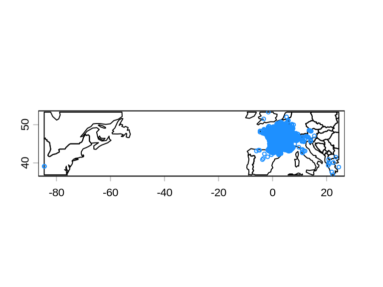
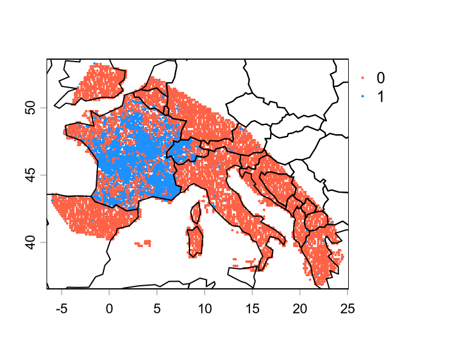

Code
library(terra)
gbif <- read.csv("../data/0002051-260120142942310.csv", sep = "\t")We selected and downloaded the occurrence data for the species Podarcis muralis (Laurenti, 1768) from GBIF: https://doi.org/10.15468/dl.x74f4b. I specified already some filters in the query from GBIF, namely:
The first filter removes records with high uncertainty, relatively to the spatial resolution of the climatic data we will use (ca. 12km). The second filter removes records outside the range of the climatic data we will use.
We load this data in R.
library(terra)
gbif <- read.csv("../data/0002051-260120142942310.csv", sep = "\t")sep = "\t" specifies that the separator of the columns is a TAB, which is the standard used by GBIF.
This data frame has many columns that we do not need. We retain only the longitude and latitude columns and drop duplicate coordinates.
gbif <- gbif[, c("decimalLongitude", "decimalLatitude")]
gbif <- unique(gbif)
# load countries polygons
# this is from rnaturalearth package, which is required by CoordinateCleaner
country <- vect(rnaturalearth::countries110)
# plot gbif records
plot(crop(country, gbif))
points(gbif, cex = .5, col = "dodgerblue")
GBIF data is known to have inaccuracies and should always be checked for coordinate errors. For example, sometimes the reported coordinates are not where the species was found, but of the museum where the specimen is stored. The package CoordinateCleaner performs several quality checks on GBIF data and flags potential inaccuracies.
library(CoordinateCleaner)
flags <- clean_coordinates(
gbif,
species = NULL,
tests = c("capitals", "centroids", "equal", "gbif", "institutions", "seas", "zeros")
)The data frame flags contains the column .summary with value TRUE if all tests did not find inaccuracies and FALSE if that data record failed at least one test. We use this to retain only GBIF records that have .summary = TRUE.
gbif <- gbif[flags$.summary, ]
plot(crop(country, gbif))
points(gbif, cex = .5, col = "dodgerblue")
There are still points in the USA, which we want to remove manually.
The Wikipedia page of this species clarifies why there are detection in North America: It is referred to locally in the Cincinnati/Northern Kentucky area as the “Lazarus lizard”, as it was introduced to the area around 1950 by George Rau, a boy whose family owned the Lazarus department store chain (Lazarus has since been absorbed into Macy). After he returned from a family vacation to northern Italy, he released about 10 of the reptiles near his Cincinnati home.
gbif <- gbif[gbif$decimalLongitude >= -20, ]
plot(crop(country, gbif))
points(gbif, cex = .5, col = "dodgerblue")
We have now a data frame of cleaned occurrences from GBIF.
To be able to model the niche and the distribution of the species, we need also absences. We thus need to generate some pseudo-absences, i.e. simulated absences, and add them to the data frame. There are several ways to generate absences, but here we will focus only one one: randomly sampling the geographic area within the polygon inscribing all known occurrences. In doing so, however, we do not want to sample an absence in the same grid cell of a presence.
The code below show how to generate pseudo-absences following this approach.
# data frame as SpatVector
gbif <- vect(
gbif,
geom = c("decimalLongitude", "decimalLatitude"),
crs = "EPSG:4326"
)
# (convex) hull inscribing all known occurrences
hull <- convHull(gbif)
# load one climate layer as template of the grid cell
grid <- rast("../data/wc2.1_10m_bio_1.tif") |> crop(hull)
# create a raster with
# - 0 if there is a gbif record in that cell
# - 1 if not
# - NA for sea cells
r <- rasterize(gbif, grid, fun = \(x) 0, background = 1)
r[is.na(grid)] <- NA
# remove areas outside the polygon inscribing all GBIF records
r <- mask(r, hull)
# sample absences
abs <- spatSample(
r,
length(gbif), # n(abs) = n(pres)
as.points = TRUE, # return a SpatVector
method = "weights", # trick to remove cells with a record (weight = r = 0)
values = FALSE # we do not care about the values of the grid template
)We can now stitch the two SpatVector together.
gbif$occ <- 1 # presence
abs$occ <- 0 # absence
# combine into one SpatVector
p <- rbind(gbif, abs)
plot(
p,
"occ", # color by `occ`
col = c("tomato", "dodgerblue"), # color palette
cex = 0.3,
fun = \() lines(country) # outline of countries
)
We can now use the SpatVector p to extract climatic variables.
In this course, we always use the WorldClim bioclimatic variables to model the niche of species. Bioclimatic variables are derived from temperature and precipitation data and are considered to have the strongest influence on the distribution of species. A list of all of them can be found at https://www.worldclim.org/data/bioclim.html.
Load eight bioclimatic variables.
# list of files of bioclimatic variables
ff <- list.files(
"../data", # where the files are
pattern = "wc2.1", # wc = WorldClim
full.names = TRUE # full path
)
# load them into memory
climate <- rast(ff)
climateclass : SpatRaster
size : 1080, 2160, 8 (nrow, ncol, nlyr)
resolution : 0.1666667, 0.1666667 (x, y)
extent : -180, 180, -90, 90 (xmin, xmax, ymin, ymax)
coord. ref. : lon/lat WGS 84 (EPSG:4326)
sources : wc2.1_10m_bio_1.tif
wc2.1_10m_bio_12.tif
wc2.1_10m_bio_13.tif
... and 5 more sources
names : wc2.1~bio_1, wc2.1~io_12, wc2.1~io_13, wc2.1~io_14, wc2.1~io_15, wc2.1~bio_4, ...
min values : -54.72435, 0, 0, 0, 0.0000, 0.000, ...
max values : 30.98764, 11191, 2381, 484, 229.0017, 2363.846, ... Using p, we extract the values of the grid cells of climate for the occurrence data.
d <- extract(climate, p, ID = FALSE, cell = TRUE, xy = TRUE)cell = TRUE return also the ID of the cell of the raster where the records are found. This is useful to keep only one record per grid cell.
We assign the occurrence status (presence/absence) to this data frame.
d$occ <- p$occThen, drop duplicate records, i.e. multiple records for the same grid cell.
# drop rows with duplicated cells
d <- d[!duplicated(d$cell), ]
head(d) wc2.1_10m_bio_1 wc2.1_10m_bio_12 wc2.1_10m_bio_13 wc2.1_10m_bio_14
1 14.709969 510 60 20
2 11.454646 775 89 44
3 8.854438 933 106 60
4 10.599990 633 61 44
5 10.302510 632 58 45
6 2.760979 549 68 27
wc2.1_10m_bio_15 wc2.1_10m_bio_4 wc2.1_10m_bio_5 wc2.1_10m_bio_6 cell occ
1 25.683231 686.3660 32.04650 2.11375 620998 1
2 21.440331 589.9808 25.82825 -0.33375 621014 1
3 18.089415 578.0707 22.92975 -2.12900 618853 1
4 9.118695 567.0883 23.99325 0.50650 538936 1
5 8.751935 560.5479 23.76875 0.34775 534618 1
6 30.307224 617.9191 15.89150 -8.37175 562745 1Finally, make sure to have more or less the same number of presences and absences.
table(d$occ) # not balanced
0 1
5016 1644 n <- table(d$occ)[["1"]]
index_pres <- which(d$occ == 1)
index_abs <- which(d$occ == 0)
# subsample
d <- d[c(index_pres, sample(index_abs, n)), ]
table(d$occ) # balanced
0 1
1644 1644 write.csv(d, "../data/occurrences.csv", row.names = FALSE)We have now a data frame obtained from GBIF that is ready to be used for ENM/SDM.